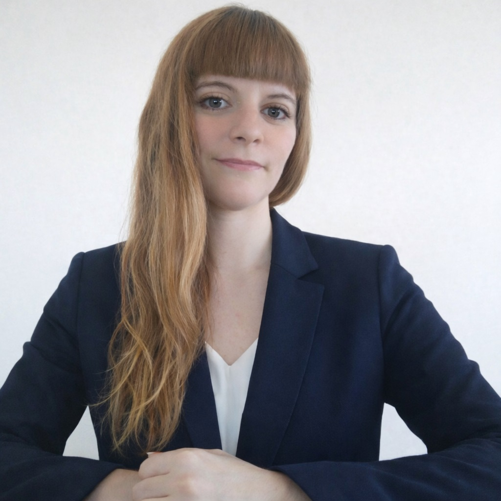

El equipo
Profesionales apasionados por la ciencia, la tecnología y el conocimiento aplicado.
En CETYE creemos que el conocimiento especializado en ciencias de la Tierra y el espacio debe ser accesible y aplicable. Formamos a los profesionales que Chile y la región necesitan para liderar la transición hacia una gestión territorial inteligente, basada en datos y tecnologías de vanguardia.
Nuestra Misión es difundir conocimiento, educar y capacitar a personas, en el ámbito de las Ciencias de la Tierra y el Espacio, optimizando su desempeño y el de las organizaciones a las que ellas pertenecen, satisfaciendo sus requerimientos a través de procesos de enseñanza basados en el desarrollo de competencias y alineados con las necesidades reales de la industria, con el propósito de aportar al desarrollo de las personas, la industria nacional y la humanidad.
Un equipo directivo con trayectorias complementarias en ciencia, tecnología e innovación, unido por la convicción de que el conocimiento aplicado transforma territorios y personas.

Doctora en Informática, experta en Teledetección y análisis de datos geoespaciales, con amplia trayectoria en gestión científica, liderazgo institucional y 15 años de experiencia en docencia universitaria de pregrado y postgrado. Ha dirigido proyectos de investigación aplicada en ciencias de la Tierra y Tecnología aplicada, articulando vínculos entre la academia, el sector público y la industria. Su visión estratégica orienta el desarrollo de CETYE hacia la formación de excelencia con impacto regional.

Profesional con experiencia en Innovación, IA y gestión de proyectos tecnológicos, con trayectoria en iniciativas CORFO y ANID. Especialista en programas de capacitación en transformación digital, análisis de datos y emprendimiento. Cuenta con experiencia en articulación público-privada, evaluación de proyectos y transferencia tecnológica, con enfoque en impacto y desarrollo sostenible. Lidera el diseño de los programas formativos de CETYE y sus procesos de evaluación y mejora continua.